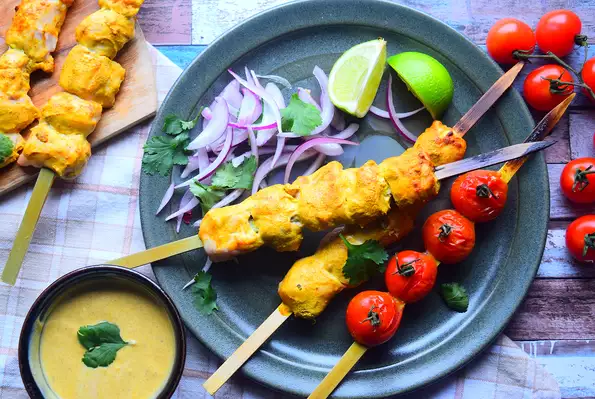

Chicken Kebab resipe's

Description
This healthy and delicious chicken tikka kebab recipe has the perfect blend of spices and flavors,
which is sure to leave your taste buds satisfied and your body nourished.
Simple yet effective! Serve with chopped red onion and tomatoes.
Ingredients
- 4 (5 ounce) skinless, boneless chicken breast halves
- 1 teaspoon freshly grated ginger
- ½ teaspoon ground black pepper
- 1 teaspoon ground turmeric
- ½ teaspoon ground cinnamon
- 6 tablespoons plain yogurt
- 1 teaspoon ground cumin
- 2 cloves garlic, crushed
- ½ teaspoon chile flakes
- metal skewers
Step 1 :
Combine yogurt, garlic, cumin, turmeric, ginger, pepper,
chile flakes,and cinnamon in a glass or ceramic bowl; mix well.
Step 2 :
Chop chicken into small chunks and add to the yogurt mixture.
Cover with plastic wrap and marinate in the refrigerator for 4 hours or overnight.
Step 3 :
Preheat an outdoor grill for medium heat and lightly oil the grate.
Step 4 :
Remove chicken from the refrigerator and thread onto skewers.
Place on the preheated grill and cook, turning occasionally,
until no longer pink in the center and the juices run clear,
about 15 minutes. An instant-read thermometer inserted into
the center should read at least 165 degrees F (74 degrees C).